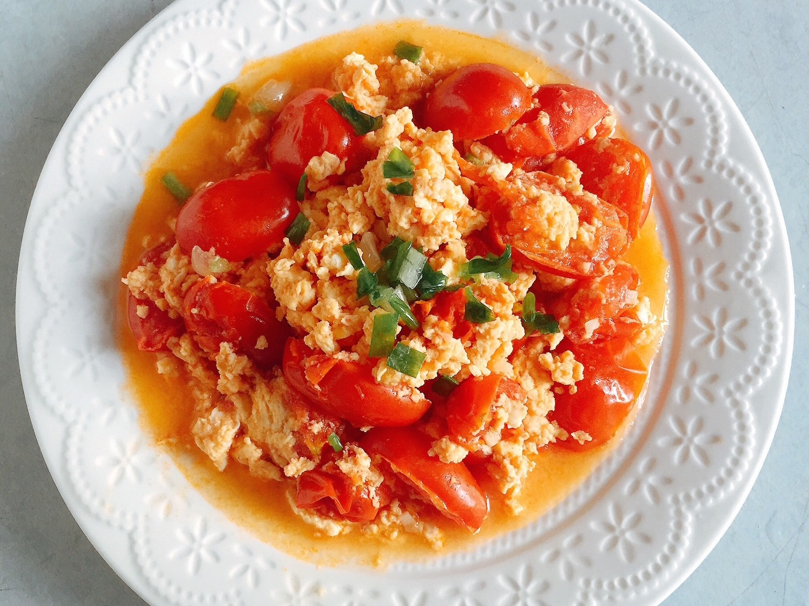
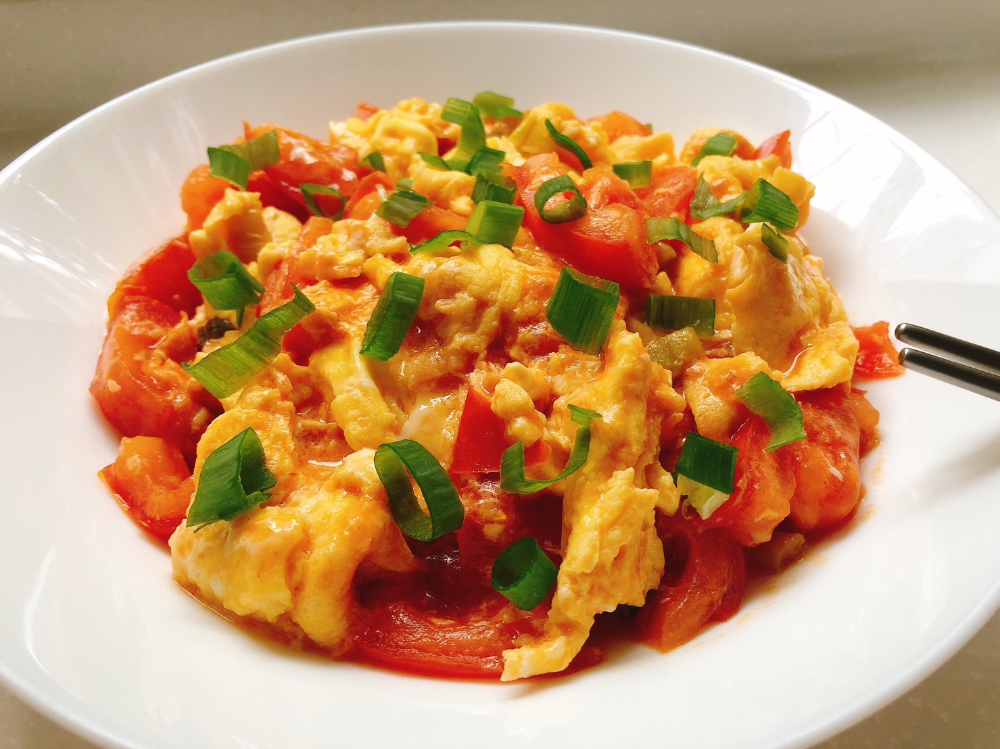
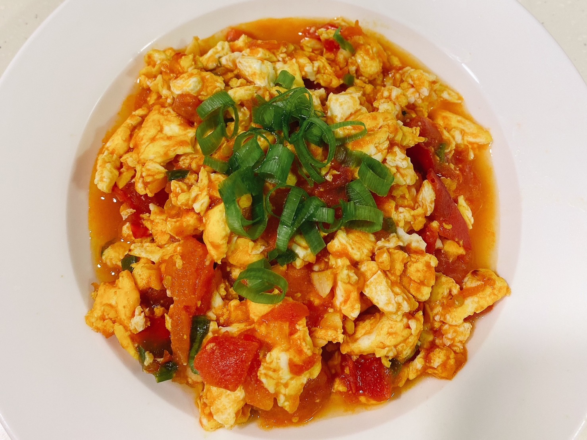

原鍋下油爆香蒜末。
加入切小塊的番茄及少許鹽巴拌炒。
可加入一點水持續拌炒至番茄呈微稠狀，再加入番茄醬、砂糖、炒蛋拌炒均勻。
灑上蔥花，即可美味上桌。
  
火腿玉米蛋炒飯介紹 糖醋排骨介紹 宮保雞丁介紹 心得
練習 影片 音樂
Your browser does not support the audio element. Your browser does not support the video tag.